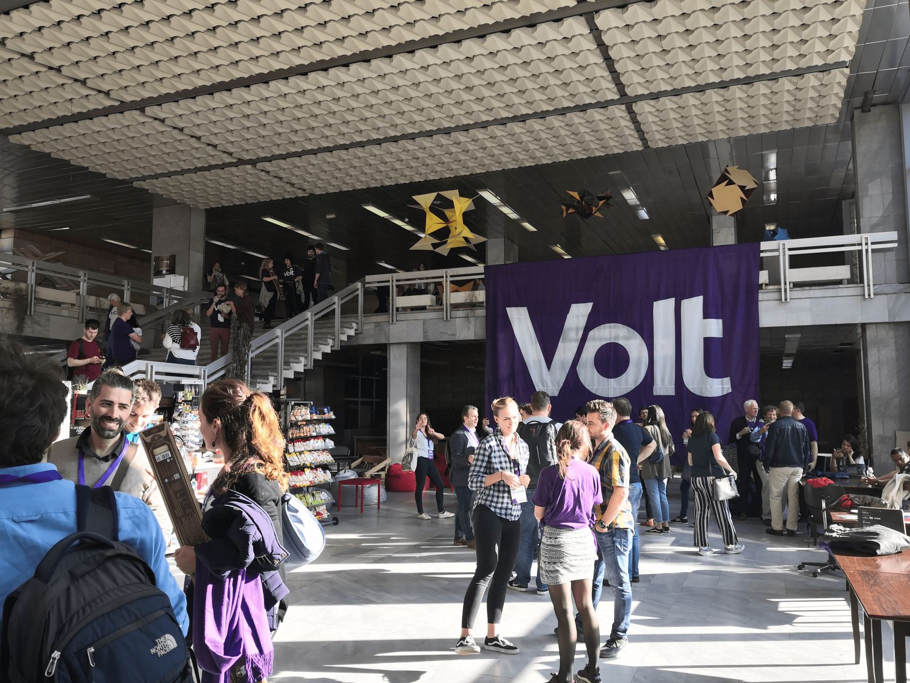

Bonjour à tous et à toutes,
Après deux jours de récupération, j'ai refait surface ! Retour sur notre Assemblée Générale à Sofia (Bulgarie). Tout est fait ! Il est temps de continuer nos efforts vers les élections municipales à Paris et à Lille en France. Il reste beaucoup à faire.
Entre temps, bonne lecture,
Sven
Quel week-end... j'ai trouvé que je suis trop vieux pour faire la fête pendant une assemblée avec pas mal des choses à faire... Nous avons voté pour notre nouveau bureau européen. Personnellement, j’ai apprécié le luxe du choix entre une vingtaine de candidats, qui seront à mon avis un excellent bureau. Ils sauront guider Volt dans son évolution, solidifier et équilibrer les équipes dans les pays pour commencer à participer aux élections locales et régionales. J'étais triste pour les candidats qui n'ont pas été élus - mais nous avons voté pour nos capitaines. Personnellement ce n'était pas une compétition entre plusieurs équipes. J'ai trouvé aussi qu'un mouvement transnational a son lot de surprises, avec des candidats méconnus puis élus avec une marge confortable. Nous avons du pain sur la planche ! Comment assurer que toutes les pays soient au courant avec ce qui se passe dans les autres pays ? Qu'est-ce qu'on fait la prochaine fois avec 100 candidats ?
Le week-end était aussi excellent en termes d’échanges avec les équipes importantes. J'ai présenté notre action "Sraddet" comme exemple de s'engager activement avec des autres associations et pour les buts concrets dans une ville. Plusieurs équipes en Pays-Bas travaillent en même principe et ça marche bien pour eux.
Enfin, l'équipe Volt Bulgarie a organisé une manifestation encadrée par la police pour nous guider à travers la ville. Fin octobre aura lieu les élections locales en Bulgarie. Volt participe à une centaine de municipalités. Nos actions et nos discussions avec la mairie étaient retransmises par une télévision nationale, donc très cool, d'avoir aidé l'équipe sur place. De plus, une idée à renforcer à l'avenir - cette façon de coopération à travers les frontières.
Voilà, beaucoup d'idées à garder et à développer. Je croise les doigts pour le nouveau bureau de Volt Europe et qu’ensemble nous continuons sur cette lancée.
Nous avons rejoint la Plateforme Nationale des Listes Participatives pour 2020 sur Facebook. C'est une plateforme pour ceux qui sont intéressés de monter une liste participative aux élections municipales en France. Après deux journées, je suis super-content de trouver de précieux renseignements pertinents. Si vous êtes intéressé(e) aux élections et vous souhaitez participer, ce groupe me semble indispensable ! J'ai créé les équipes pour Volt Lille et Volt France dans la liste des équipes - n'hésitez pas à les rejoindre.

L'avis est soumis. Viola. Demain nous lancerons un communiqué de presse concernant notre avis. Bonne occasion de se présenter pour les élections municipales aussi. En terme des avis, j'ai compte environ 30 de 600 avis, qui étaient faites avec le générateur sur https://arret-sraddet.fr/. Très satisfait de ce résultat. L'avis de MRES a été cité environ 60 fois - chapeau pour leurs efforts ! J'ai trouvé ce processus de fournir les moyens de s'exprimer très intéressant. Une belle piste pour permettre la participation de citoyens et que nos efforts seront pris en compte. Nous vous tenons en courant. Notre avis est sur notre page de publications.

Ce weekend sera le weekend des sections Nord des Jeunes Européens. Nous sommes invités à participer aussi - donc si vous êtes dispo, n'hésitez pas de vous inscrire dans l'événement sur Facebook.

Je cite: "'Curieuses Démocraties : Osons des listes participatives en 2020 !' Subtil mélange de participatif et de festif, ce festival national itinérant fait étape à Saint-André et dans la métropole lilloise, les 16 et 17 novembre 2019. Rendez-vous pour un week-end de rencontres et d’échanges pour questionner et favoriser le partage de compétences et d’expériences sur la démocratie locale. Les participants viennent imaginer, construire et mettre en œuvre dans leur quartier, ville ou village, d’autres manières de faire démocratie."
Une bonne occasion de parler les élections municipales. Plus d'info dans l'événement sur Facebook ou sur http://le-collectif.org/curieuses-democraties/
Les projets suivants à Lille, la MEL et la région ont besoin de vos avis et de vos idées :
Aucun projet participatif en ce moment
Quels événements à Lille sont intéressants à participer ? Voici notre liste :

Des questions, des commentaires : info@voltlille.fr.
Bonne semaine à tous,
Sven